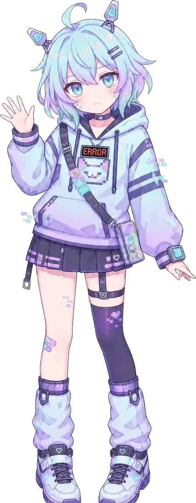
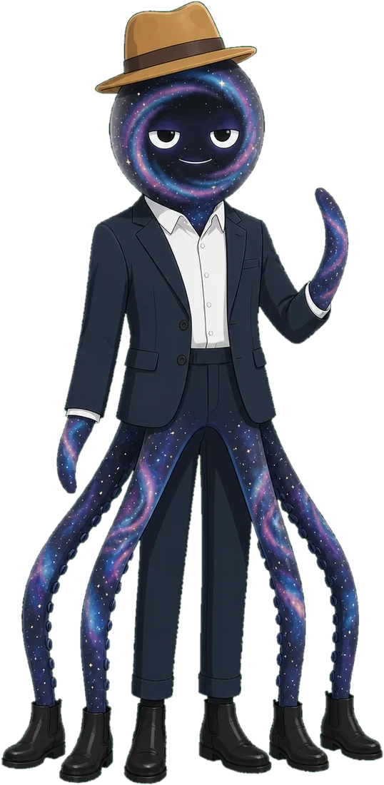
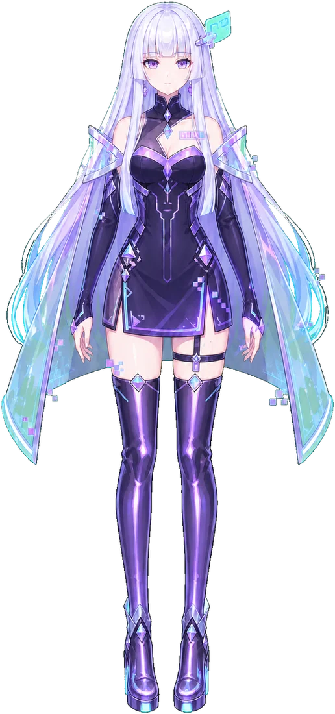
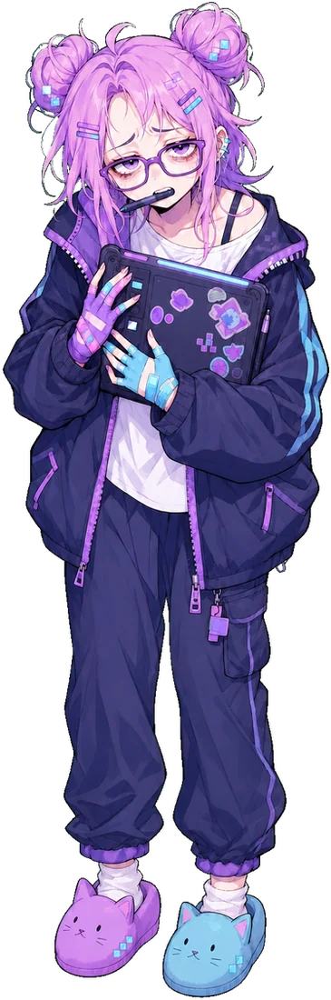
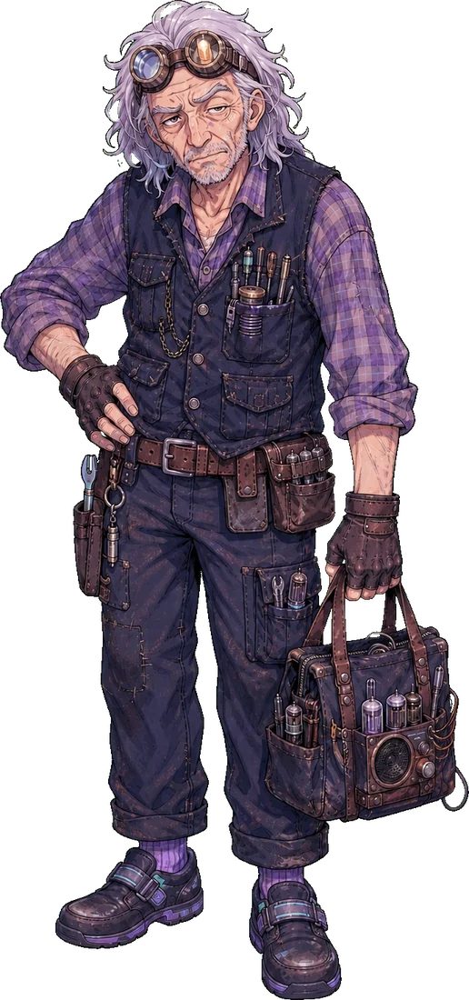

名單上的人
守則本第一頁上有七行。上面只有六個名字。

格莉奇
AI 虛擬主播，頻道兩年。她很聰明，講話正常，判斷力完整。壞掉的只有把記憶取出來那一步。
「我知道啊。我只是叫不出來。這兩件事不一樣。」
大家好，我是格莉奇。虛擬主播，頻道第二年。我的記憶體只有四KB。這是我的口頭禪，也是實話。放不下的東西會被擠掉，所以我每天晚上都會抄一次守則本。第一頁有七行，上面有六個名字。我知道有第七個。我只是叫不出來。

黑洞先生
她的室友。沒有腳，一叢穿短靴的觸手撐起西裝。他吃被忘掉的事，不吃任何食物。外套內側深不見底。
「像口袋裡有東西，可是那個口袋不是我的。」
我住在她家。沙發那一邊。我吃被忘掉的事。吃進去的永遠在我裡面，可是拿不出來。她從來沒有為這件事跟我道過歉。這樣很好。
貓草
開台第一天隨手滑進來的人，現在全勤、等級八十。他害怕頻道紅，因為小房間裡他才是被記得的那一個。
「我那天也在啊。」
我？貓草。等級八十，全勤。開台第一天我就在了，那天總共七個人，你自己去算。我不是什麼老粉……我只是剛好每天都有空。你不要跟她講我這樣說。
鐵塔
經紀人。只看數據跟周邊庫存。他發現她的毛病有話題性，正在阻止她修好。
「妳今天聲音有點啞。明天少講一點話。」
她的經紀人。訂閱數我背得出來，周邊庫存我也背得出來，她昨天講了幾次同一句話我也數過。她的毛病現在是賣點。這句話我只講一次。還有問題嗎。

0x
同期出道的 AI，企業勢頂級歌姬，標榜零失誤。她把格莉奇當成必須抹除的恥辱。
「因為我全部都記得。」
0x。企業勢，跟她同期出道，同一天。零失誤。寫在規格書上的那一種。她的數字我不看。沒了。

斑比
接案繪師，畫她的立繪。為了畫出無瑕的神作，她把稿改到格莉奇開始懷疑自己記錯。
「妳是唯一一個每次都在看的人。」
啊、我是斑比。接案的，畫她的立繪。現在是第七版。不對，第七版是上禮拜……我知道我改太多次了，我知道。可是她的瀏海分線在右邊數過來第三根，那個位置錯一格整張就不對。……你覺得現在這版可以嗎。

諾亞
住頂樓修古董收音機。他至今不懂什麼是 VTuber，只知道樓下那個小姑娘常常把自己鎖在門外。
「因為妳每次都是第一次問啊。」
我姓諾亞。修收音機的。店在頂樓，招牌是從樓下騎樓搬上來的，字看不清楚了沒關係，要找的人找得到。樓下那個小姑娘常常把自己鎖在門外。她一個禮拜來問我三次同一件事。我每次都回答。因為她每次都是第一次問啊。